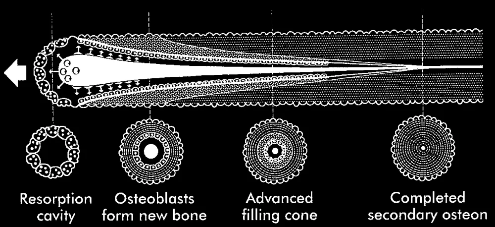

نسخه استخراجشده؛ ترجمه یا تأیید علمی انجام نشده است. وضعیت: captured
بیش از ۹۹ درصد اسکلت بالغ، استخوان لاملار است: منظم، خوبمعدنیشده و محکم. استخوان بافهای نقطهی مقابل آن است — سریع ساخته میشود ولی نامنظم و ضعیف؛ اگر زود بار ببیند، بهسرعت جذب میشود.
استخوان با دو فرایند جدا اداره میشود: مادلینگ شکل و اندازه را روی سطح عوض میکند (مثل کالوس پس از جراحی)، و ریمادلینگ بافت قدیمی را در همان محل با نو جایگزین میکند — با جفتِ استئوکلاست/استئوبلاست در قالب «مخروط برش و پرکردن»: سر استئوکلاستی تونل میزند، دنبالهی استئوبلاستی پشت سرش استئون ثانویه میسازد.
یک چرخهی کامل ریمادلینگ در انسان حدود ۱۷ هفته طول میکشد (در خرگوش حدود ۶ و در سگ حدود ۱۲ هفته) — عددی که پشت همهی «زمانهای انتظار» ایمپلنتولوژی ایستاده است. و بار اصلی نگهبانی با استئوسیتهاست: حسگرهای مکانیکی مدفون در بافت. استخوان ترابکولار هم، با سطح وسیعی که رو به مغز استخوان دارد، بسیار سریعتر از کورتیکال نو میشود.

مدل مکانواستات نشان میدهد پاسخ استخوان تابع میکرواسترین است: زیر بار خیلی کم، آتروفی عدم استفاده؛ در بازهی فیزیولوژیک (حدود ۲۰۰ تا ۲۵۰۰ میکرواسترین) تعادل؛ فراتر از آن هیپرتروفی با استخوان بافهای؛ و بالای حدود ۴۰۰۰، اضافهبار پاتولوژیک. شکستگی در ۱۰ تا ۲۰ هزار میکرواسترین — یعنی فقط ۱ تا ۲ درصد تغییر شکل.
و نکتهی کاربردی برای جراح: هر دستکاری استخوان، موجی از ریمادلینگ تشدیدشده در بافت مجاور راه میاندازد — پدیدهی تسریع ناحیهای (RAP). به همین دلیل دکورتیکاسیون بستر پیوند میتواند سرعت ترمیم را ۲ تا ۱۰ برابر کند و کورت کشیدن به دیوارهی ساکت، ترمیم را قابل پیشبینیتر میکند. ترومای حسابشده، دوستِ ترمیم است.
نوع سؤال: ساخت کلمه · 5 خانه
حروف منبع: و · خ · ر · ش · گ